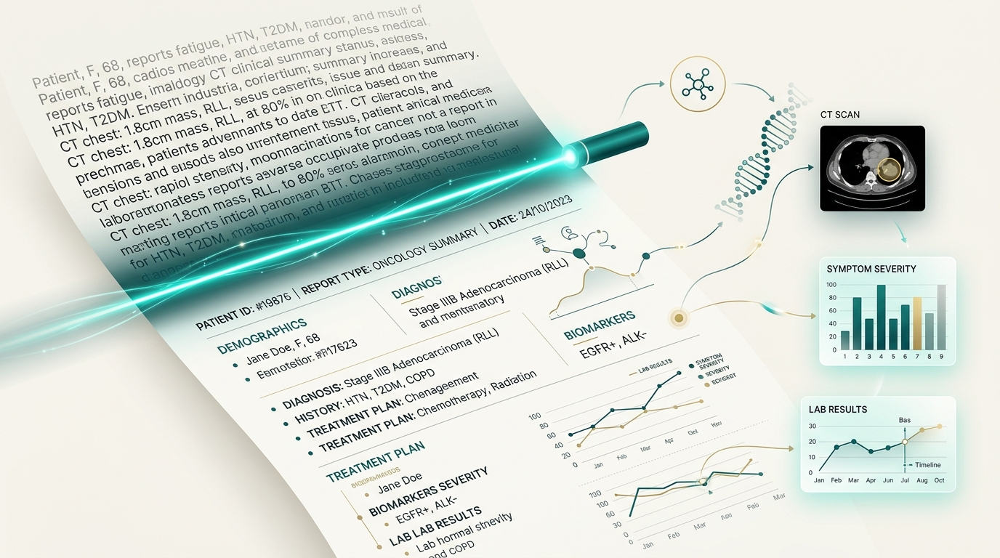
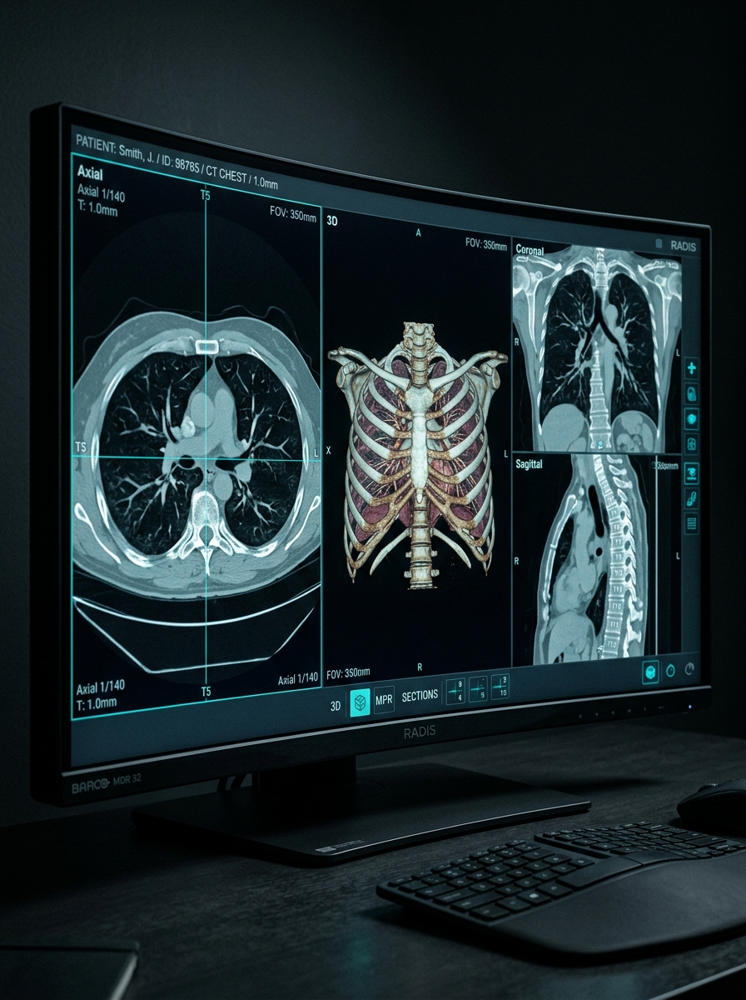
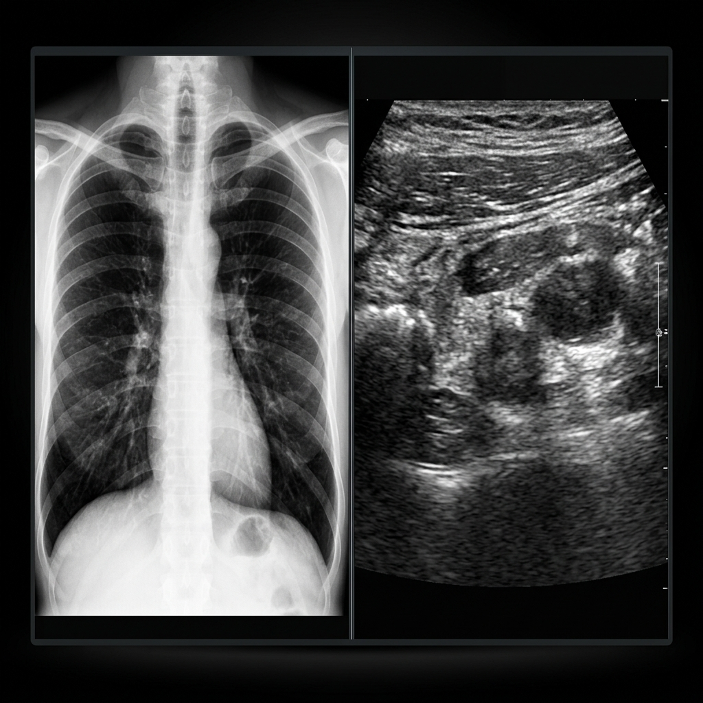

RadFlow helps radiologists turn spoken observations into structured, reviewable reports, reducing repetitive documentation and keeping the reporting workflow focused.
Speak & Detect
Doctor dictates findings naturally while our software instantly detects and transcribes medical terminology.
"There is mild bilateral maxillary sinus mucosal thickening with no air-fluid levels..."
Generate Report
Raw transcripts are seamlessly converted into structured, perfectly formatted clinical data.
{"anatomy": "maxillary sinus", "condition": "mucosal thickening", "severity": "mild", "laterality": "bilateral"}
Mild bilateral maxillary sinus mucosal thickening.
Verify & Download
The final report is verified by our AI LLM, ready for immediate download and clinical use.
Dr. Sarah Vance, MD

Built for the way radiology works.
Calibrated across standard diagnostic modalities with specialized lexicon support for CT, MRI, chest radiography, and ultrasound acoustic parameters.


Multimodal parsing precision
RadFlow instantly distinguishes between plain radiographic projections, cross-sectional voxel data, and sonographic echogenicity descriptions.
Everything you need for a voice-first workflow.
Constructed without clutter. Each capability solves a specific bottleneck in the clinical diagnostic lifecycle.
01. Voice-first reporting
Speak naturally while RadFlow captures your observations with zero wake words or mechanical voice macros required.
02. Real-time transcription
See spoken observations converted into text with instantaneous latency, recognizing specialized radiographic nomenclature.
03. Intelligent report structuring
Organize dictated information into appropriate report sections, automatically generating standard Findings and Impressions.
04. Report generation
Turn structured information into a clean, professional clinical document ready for hospital EHR transmission.
05. Review before finalization
Review, edit, and control the final output before it becomes an indelible medical record. You remain the author.
06. Built around your workflow
Keep voice, transcription, review, and reporting seamlessly connected without switching application windows.
The gap between the diagnosis and the report is where time is lost.
Observations are made instantly, then bottlenecked by rigid voice macros, manual formatting, and error correction. RadFlow closes that gap to zero.
AI should assist the workflow, not get in the way of it.
Constructed to align with institutional healthcare governance, strict HIPAA compliance, and local hospital sandboxing.
Zero Training Retention
Patient PHI is never stored or used for foundational model re-training.
Hospital SSO & RBAC
SAML 2.0 and Kerberos integration mapped directly to verified credentials.
Mandatory MD Sign-off
No automated generation commits to the EMR without attending verification.
Full Speech Audit Trail
Every sentence links deterministically back to verified acoustic timestamps.
Your words in.
A structured report out.
Experience a voice-first approach to radiology reporting designed to keep your workflow focused on diagnostic precision.
IMPRESSION:
1. No acute territorial ischemia or intracranial hemorrhage.
2. Normal ventricular symmetry without midline deviation.
STATUS: DISPATCHED TO HOSPITAL EHR